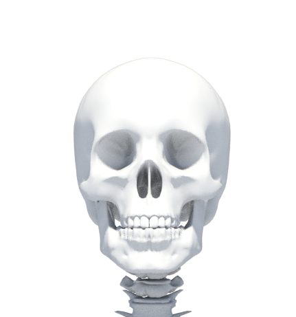
The skull protects the brain and supports the structure of the face. It is made up of 22 bones that are connected by sutures. Inside the skull is the brain, which controls all the functions of the body. The eyes, ears, nose, and mouth are located in the front of the head. The skull also helps maintain balance.
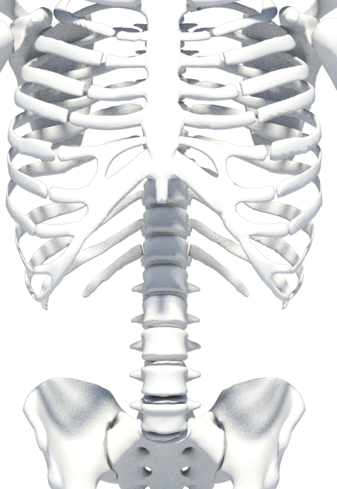
The torso contains vital organs such as the heart and lungs. The ribs and spine protect the internal organs from injury. The diaphragm, a muscle below the lungs, helps with breathing. The spinal column provides stability and mobility of the body. The torso connects the upper and lower body.
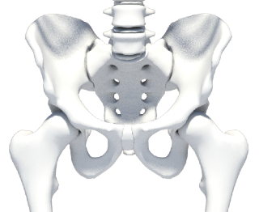
It is not a single bone, but a complex structure composed of three main bones, which are joined in a single ring. The pelvis consists of the following bones: Two pelvic bones (os coxae): Each pelvic bone is a large, irregular bone that forms the sides and front of the pelvis. At an early age, it consists of three separate parts: Iliac bone (os ilium) sciatic bone (os ischii) pubic bone (os pubis)
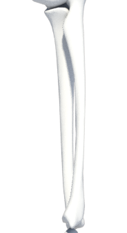
The forearm contains two bones, the ulna and the radius. The ulna is on the pinky side and forms the main part of the elbow, with the olecranon at the tip and the trochlear notch fitting the humerus. The radius is on the thumb side and helps form the wrist, with its head allowing rotation and the radial tuberosity serving as the biceps attachment. The two bones are connected by the interosseous membrane. When the palm faces up, they are parallel, and when the palm faces down, the radius crosses over the ulna.
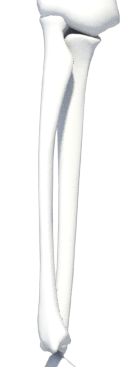
The forearm contains two bones, the ulna and the radius. The ulna is on the pinky side and forms the main part of the elbow, with the olecranon at the tip and the trochlear notch fitting the humerus. The radius is on the thumb side and helps form the wrist, with its head allowing rotation and the radial tuberosity serving as the biceps attachment. The two bones are connected by the interosseous membrane. When the palm faces up, they are parallel, and when the palm faces down, the radius crosses over the ulna.
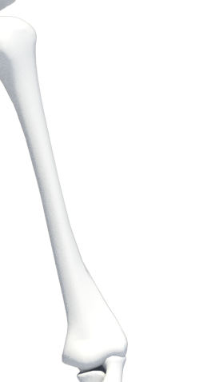
The humerus is the long bone of the upper arm, extending from the shoulder to the elbow. Its rounded head fits into the shoulder socket, allowing a wide range of motion. The shaft provides attachment points for muscles like the biceps and triceps, while the distal end forms the elbow joint with the radius and ulna. The humerus supports arm movement and connects the shoulder to the forearm.
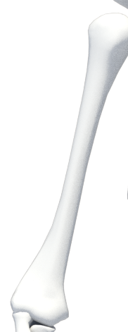
The humerus is the long bone of the upper arm, extending from the shoulder to the elbow. Its rounded head fits into the shoulder socket, allowing a wide range of motion. The shaft provides attachment points for muscles like the biceps and triceps, while the distal end forms the elbow joint with the radius and ulna. The humerus supports arm movement and connects the shoulder to the forearm.
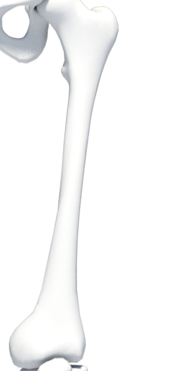
The femur is the long bone of the thigh, extending from the hip to the knee. Its rounded head fits into the hip socket, forming the hip joint and allowing a wide range of leg movement. The shaft of the femur provides attachment points for muscles such as the quadriceps and hamstrings. At the distal end, the femur forms the knee joint with the tibia and patella, supporting weight and enabling walking, running, and jumping.
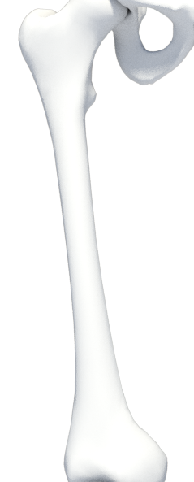
The femur is the long bone of the thigh, extending from the hip to the knee. Its rounded head fits into the hip socket, forming the hip joint and allowing a wide range of leg movement. The shaft of the femur provides attachment points for muscles such as the quadriceps and hamstrings. At the distal end, the femur forms the knee joint with the tibia and patella, supporting weight and enabling walking, running, and jumping.
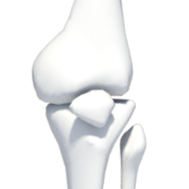
The patella, or kneecap, is a small, triangular bone that sits in front of the knee joint. It protects the joint from injury and increases the leverage of the thigh muscles, helping the leg to extend efficiently. The patella plays an important role in stabilizing the knee and allowing smooth movement during walking, running, and jumping.
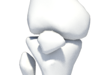
The patella, or kneecap, is a small, triangular bone that sits in front of the knee joint. It protects the joint from injury and increases the leverage of the thigh muscles, helping the leg to extend efficiently. The patella plays an important role in stabilizing the knee and allowing smooth movement during walking, running, and jumping.
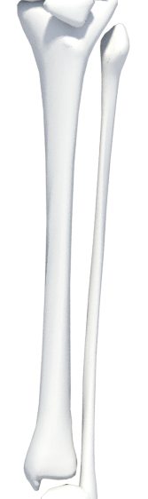
The lower leg contains two bones, the tibia and the fibula. The tibia, or shinbone, is the larger bone on the inner side and bears most of the body s weight, forming the main structure of the lower leg. The fibula is thinner and lies on the outer side, providing stability and serving as an attachment point for muscles. Together, these bones support the leg, enable movement, and connect the knee to the ankle.
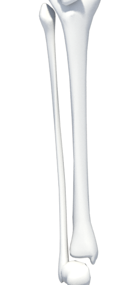
The lower leg contains two bones, the tibia and the fibula. The tibia, or shinbone, is the larger bone on the inner side and bears most of the body s weight, forming the main structure of the lower leg. The fibula is thinner and lies on the outer side, providing stability and serving as an attachment point for muscles. Together, these bones support the leg, enable movement, and connect the knee to the ankle.
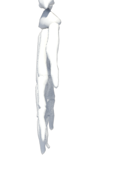
The arm consists of three main bones: the humerus, the radius and the ulna. Enables precise movements and manipulation of objects. Joints such as the elbow and wrist allow for flexibility. Arm muscles help in lifting and carrying objects. Fingers enable precise movements.
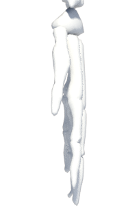
The right hand has the same structure as the left, but right-handed people usually have more power and precision. The humerus, radius and ulna make up the skeleton of the arm. Fingers and thumb enable grasping and precise movements. Arm muscles allow lifting and control of movement. Joints provide flexibility and stability.
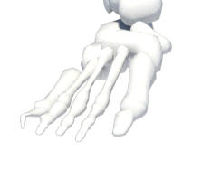
The foot contains 26 bones organized into three groups:Tarsals (7): Form the ankle and heel. Key bones are the Talus (ankle joint) and Calcaneus (heel).Metatarsals (5): The long bones in the middle of the foot. Phalanges (14): The toe bones.Held together by ligaments, these bones form arches for shock absorption and stability. The skeleton's primary function is to support body weight and act as a rigid lever for propulsion during walking. Common issues include fractures, arthritis, and bony deformities like bunions.
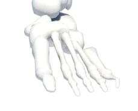
The foot contains 26 bones organized into three groups:Tarsals (7): Form the ankle and heel. Key bones are the Talus (ankle joint) and Calcaneus (heel).Metatarsals (5): The long bones in the middle of the foot. Phalanges (14): The toe bones.Held together by ligaments, these bones form arches for shock absorption and stability. The skeleton's primary function is to support body weight and act as a rigid lever for propulsion during walking. Common issues include fractures, arthritis, and bony deformities like bunions.